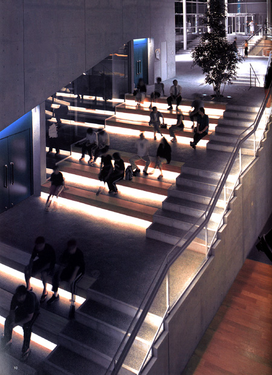

|
◇ まちのアートファクトリー  |
| ■DATA | |
| 名称／ | 北上市文化交流センター |
| 所在地／ | 岩手県北上市 |
| 主用途／ | 文化会館 |
| 建築主／ | 北上市 |
| 設計担当／ | 総括：野口秀世 建築：兒玉謙一郎、佐々木龍一 構造：打越瑞昌、油谷憲二、木村正豪、伊藤卓哉 電気：今橋慎、下田健也 空調・衛生：大前芳蔵、中村導彦 |
| 共同設計／ | 高橋設計 |
| 施工／ | 建築：鹿島・高弥・千田JV 電気：ユアテック・富栄JV 空調：朝日・東芝空・まるもJV 衛生：大成温・まるもJV 舞台機構：カヤバ工業 |
| 構造／ | S、SRC造 |
| 階数／ | 地上3階 地下1階 |
| 面積／ | 敷地：32,191m2 建築：9,486m2 延床：14,926m2 |
| 竣工／ | 2003年9月 |
| その他／ | 大ホール503席（固定310席・立見193席）、中ホール450席 |
| ■ CLOSED |